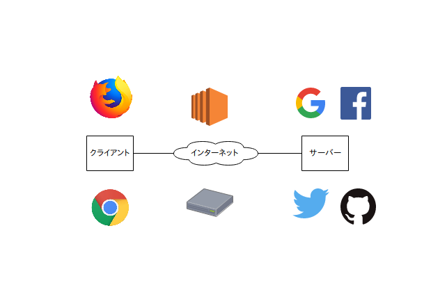
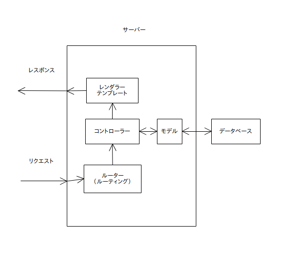
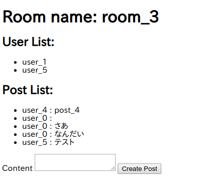
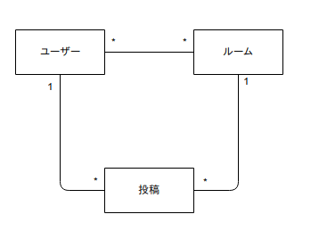
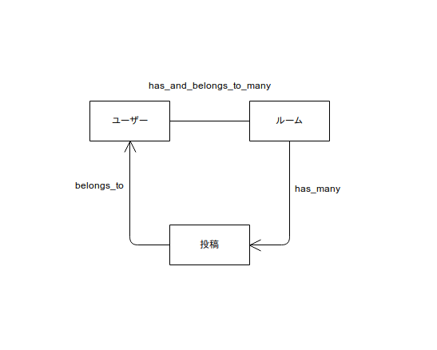

ウェブアプリケーションを作る上で必須の知識のうち、サーバーサイドプログラミングの基本的な概念を学ぶ
講習会では、これに加えてGit,anyenv,rbenv,Google Chrome,Visual Studio Codeをインストールしたものを仮想マシンとして配布しています。
さらに、Mysqlのrootユーザーにパスワードなしで入れるように設定もしてあります。
仮想マシンのデスクトップには、今回の講習会でできあがるものサンプルも置いてあります。(simple-chat)
サーバーサイドプログラミングの前に、ウェブページの基本的なフローを改めて見た上で、「サーバーサイド」とはどれくらいなのかを確認します。

現在のウェブサービスの殆どは「クライアント - サーバーシステム」というシステムに当てはまります。
つまり、ブラウザなどのクライアントがインターネットを介してサーバーと通信するというシステムです。
より具体的には以下のようなステップを踏んでいます。
これらのすべてについてそれぞれプログラミングで制御できるのですが、すべての分野に精通するのは難しいので、以下のようにある程度分業がされています。
きれいに分離できるわけではなく、ある程度重複も発生します。
それぞれ、かっこの中の数字が対応しています。また、クライアントサイド、サーバーサイドでのエンジニアリングができる人をフロントエンドエンジニア、バックエンドエンジニアと呼んだりします。
つまり、サーバーサイドプログラミングとは、「リクエストに応じてレスポンスをいかに返すか」というものであると言えます。
では、リクエストを受け取ってからレスポンスを返すまで、サーバーの中では何が起こってるのでしょうか？
レスポンスを返すまでの流れを通じて、ルーティングなどのいくつかの概念を確認します。たくさん用語が出てきて大変だと思いますが、あとで何回もこの図は見ることになると思うので、いまはひとまず「そういうことなんだ」と思っておいてください。

最初にリクエストが届くと、そのデータ（基本的にはURL）をもとに、どの処理が呼び出されるのかがまず処理されます。例えば、GET /users/listだったら「ユーザー一覧を取得する関数」が呼ばれる、といった感じです。この振り分けの段階をルーティングと呼びます。
データベースです。（説明になってない。）
データがたくさん入っています。（これも説明になってない。）
データベースのデータに対する操作や、データ同士の相関をプログラムで表現したものです。例えば、Userモデルだったら、「年齢を更新する」だったり、「Profileオブジェクト（プロファイル）を持っているので、それを更新する。」だったりといったメソッドが生えています。
一般的に、アプリケーションを通じて実現したいことはモデルで表現し、コントローラーなどはそれを表示したり変換したり操作したりするだけの場合が多いです。
モデルを操作したり変換したりして、レンダラーにデータを渡します。
たとえば、先程のGET /users/listの場合だと、「Userのすべてのデータを取得して、一覧をレンダラーに渡す」といったふうになります。
先程のコントローラーから受け渡されたデータを加工して、レスポンスの形にするのはここです。レスポンスといっても色々あり、画像だったりjsonだったりすることもありますが、普通はHTMLの文字列の形にデータを変換して吐き出すことが多いです。
一応基本概念をざっとさらったので、いよいよ作り始めるわけですが、その前にどんなアプリケーションを作るかを考えます。

デザインの欠片も存在しない殺風景な画面ですが、実装するとこんな感じになります。
作るアプリは、L○NEのような、グループでトークができるもの（の劣化版）です。
画面を見ると、だいたいこんな機能がほしいなあとなってきます。
また、以下のような機能もあったほうが良さそうです。
さらに、今回はログインなどを実装しない代わりに、以下の画面をつくることにします。
ユースケースを考えた次は、これを実現するのに必要なモデルを考えます。
モデルを作る一番簡単な方法の一つである、「名詞・動詞分析法」っぽいことをしながらモデルを考えていきます。
まずは、先程のユースケースから「名詞」を洗い出すとこんな感じになります。
「一覧」とかはひとまず置いておくとします。
この3つを見ると、以下のような相関があることがわかります。
以上を踏まえた上でモデルの簡単な図を書くと以下のようになります。

ユーザーと投稿とルームがそれぞれ線で結ばれていています。また、ユーザーと投稿を結ぶ線のユーザー側には「1」、投稿側には「*」が書かれていますが、これは、「ユーザー1つと投稿複数が対応している」ということを表しています。また、ユーザーとルームについては、「ユーザー複数とルーム複数が対応している」ということを表しています。
今回は名詞を洗い出しただけで、実際の「一覧を取得」だとか「追加」といったものをまるで考えませんでした。本来ならばもちろんこのステップも必要なのですが、今回考えなかったのは、Ruby on Railsがそういった「よくあるユースケース」を自動で実装してくれるためです。
モデルをデータベースのルールとして実装します。Railsの便利機能をいっぱいに使っていきますが、他の言語での実装でも参考になる事項が多いです。
前の項でモデルを定義したものの、これだけでは実装には少し足りませんので、いくつか情報を補足してやることにします。
まずは、「フィールド」です。例えば、最低限以下のようなフィールドが必要になります。
実はこれでもまだ足りなくて、これに加えて、モデル同士の「関連付け」を行ってやる必要があります。
Active Record の関連付け (アソシエーション)のページにあるアソシエーションに基づいてもう一回モデルを整理すると、以下のようになります。

一つひとつ解説していきます。
1対1の関係を表します。今回は、投稿(post)がユーザー(user)に属している(post belongs_to user)という形で使用しています。これにより、postからuserを読むことが可能になります。実装の上では、postに「user_id」というフィールドを要求します。
has_many
1対多の関係を表します。今回は、ルーム(room)が投稿(post)をたくさん持っている(room has_many posts)という形で使用しています。これにより、roomからpostの一覧を読むことが可能になります。実装の上では、postに「room_id」というフィールドを要求します。
has_and_belongs_to_many
多対多の関係を表します。今回は、ユーザー(user)とルーム(room)が多対多である(user has_and_belongs_to_many room)という形で使用しています。これにより、ユーザー、ルーム
がそれぞれ、自分と関係のある相手の一覧を取得することが可能になります。実装の上では、「user_idとroom_id」が対になった情報が入った「中間テーブル」を必要とします。
ようやく実装です。ターミナルを起動して、以下のコマンドを順番に打ち込みましょう。
cd ~/desktop
# railsのプロジェクトを作成
rails new test_chat -d mysql -B
cd test_chat/
# エディタを起動
code .
すると、ファイルがたくさん作成されてから、エディタが開くと思いますので、Gemfileの以下の行の先頭の「#」を消して保存します。
# gem 'mini_racer', platforms: :ruby
そして、以下のコマンドを順番に打ってください。
# 依存パッケージをインストール
bundle install
# データベースを作成
rake db:create
# モデルを作成
rails g model user name:string
rails g model room name:string
rails g model post content:string room_id:integer user_id:integer
すると、ファイルがまたたくさん作成されると思います。
./db/migrateフォルダの中のusers,rooms,postsファイル、
そして、./app/modelsの中のusers,rooms,postsファイルを、同じデスクトップにある「simple-chat」の中身を参考に実装してください。(コピペでいいです)そして、以下のようなコマンドを実行してください。
rake db:migrate
うまくいったら、mysql -urootと打って、以下のように打つとテーブルができていることがわかると思います。
use test_chat_development;
show tables;
先程のモデル実装では、データベースのいわば「枠」を書き込んだだけですので、中身がありません。
しかし、実際の開発では仮のデータがあると便利な場面が多いですので、実際にデータを投入してみます。
実際にデータを投入するためには、./db/seedsファイルを編集し、以下のコマンドを実行すれば大丈夫です。
rake db:seed
先程開いたmysqlのターミナルで、以下のように打ってみましょう。また。usersのところを他のものに変えていろいろ試してみましょう。
select * from users;
いろいろ追加されているのがわかると思います。
これでデータが追加されましたので、ようやく表示する準備が整いました。実際にコントローラー、ルーティングを作成し、表示をしてみます。
Ruby on Railsでコントローラーを追加するのは非常に簡単です。以下のコマンドを打ってください。
rails g controller rooms show
すると、ファイルが作成されると思いますので、./app/controllers/rooms_controllerを実装してください。
そのままですとルーティングがなされないので、./config/routes.rbを以下のように書き換えます
Rails.application.routes.draw do
get 'rooms/show/:room_name/:user_name' => 'rooms#show'
# For details on the DSL available within this file, see http://guides.rubyonrails.org/routing.html
end
残すはあとはテンプレートの編集のみです。以下のコードを./app/views/rooms/show.html.erbに貼り付けてみてください。
<h1>
Room name: <%= @room[:name] %>
</h1>
<h2>User List:</h2>
<ul>
<% @room.users.each do |user|%>
<li>
<%= user[:name] %>
</li>
<% end %>
</ul>
<h2>Post List:</h2>
<ul>
<% @room.posts.each do |post|%>
<li>
<% user = post.user %>
<%= user.name %> : <%= post[:content] %>
</li>
<% end %>
</ul>
そして、以下のコマンドを打って、ブラウザで「localhost:3000/rooms/show/room_0/user_0」にアクセスしてみてください。
rails s
うまく表示されたらおめでとうございます！
今回はmodelから作っていきましたが、今回は逆にレンダリング側からつくってみます。
./app/views/rooms/show.html.erbに以下のコードを追加してください
<%= form_for Post.new do |f| %>
<%= f.hidden_field :user_name, :value => @user.name %>
<%= f.hidden_field :room_name, :value => @room.name %>
<%= f.hidden_field :user_id, :value => @user.id %>
<%= f.hidden_field :room_id, :value => @room.id %>
<%= f.label :content %>
<%= f.text_area :content %>
<%= f.submit %>
<% end %>
この状態で先程のページにアクセスすると、今度はエラーが出てきます。これは、要は「postする先が存在しないけれどどうするの」ということです。なので、./config/routes.rbに以下のコードを書き足してやります。
post 'posts' => 'posts#create'
すると、今度は、「そんな関数はない」というエラーが出てくると思うので、コントローラーを以下のコマンドでターミナルから追加してやります。
rails g controller posts
最後に、sample-chatを参考に./app/controllers/posts_controller.rbのコードを書いて実行してみると、今度は投稿もできるようになっているはずです！
その他simple-chatには、簡単な一覧表示などがありますが、ひとまずこれで最低限はいいでしょう。
あえて今回作らなかったところは、2週間以内に書いてきたら2週間以内にコードレビューします！